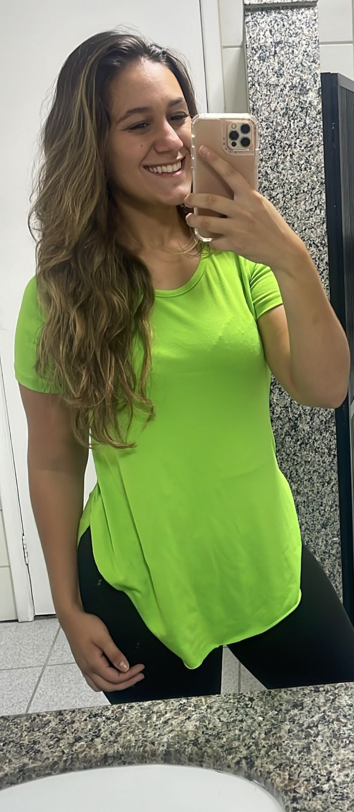
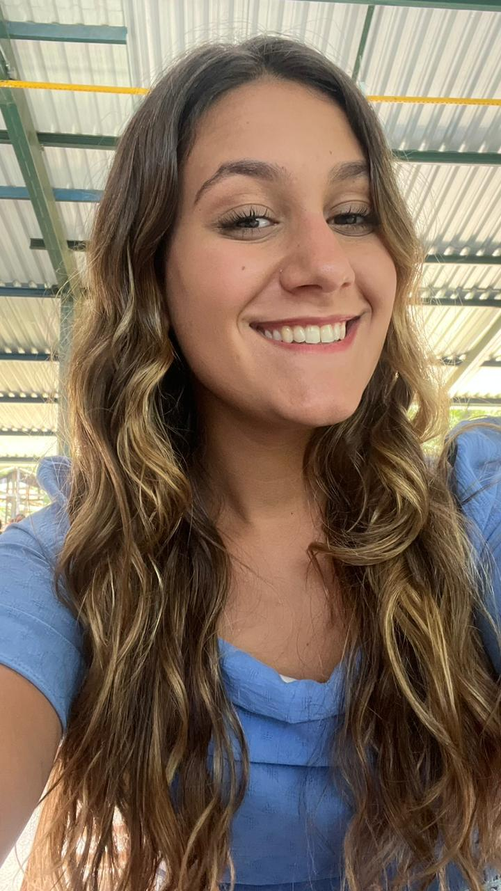
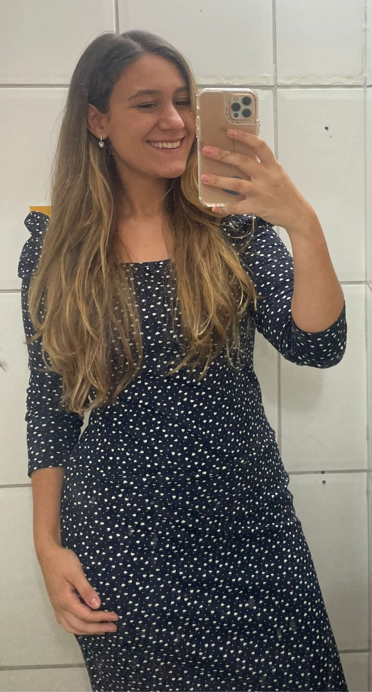
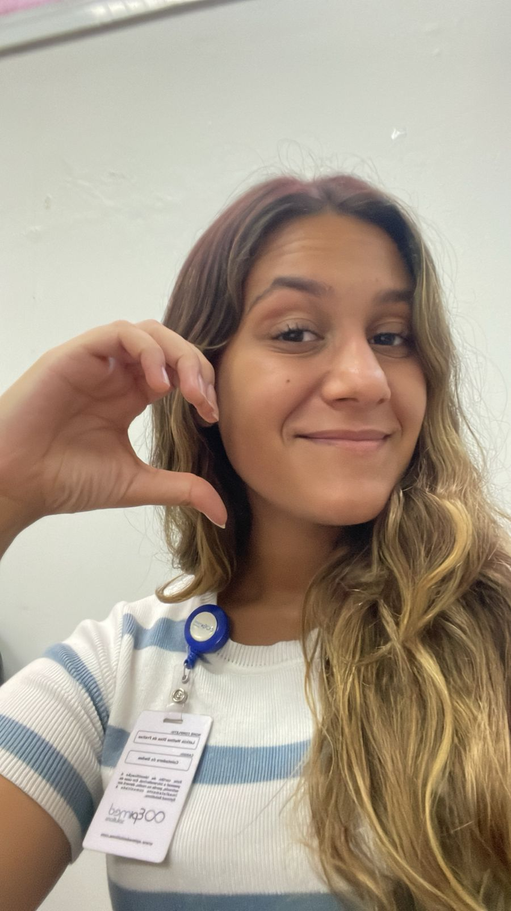

E quando te encontro, tudo fica melhor!
Na minha maior saudade, eu olho para você, e tudo melhora...




Não tenho palavras para dizer o quanto eu te amo e te quero cada vez mais na minha vida
todas essas fotos me fazem lembrar a cada dia, quem eu amo! E me fazem amar você cada vez mais!